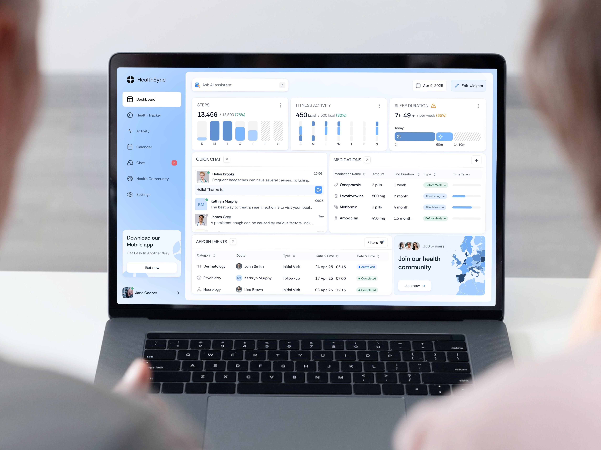

Engineering
Frontend Developer
Build accessible, high-performance, and user-friendly healthcare web platforms and patient portals.
Discover meaningful career opportunities where innovation, technology,
and healthcare come together to improve lives.
Find the role where you can make a direct impact on healthcare digital transformation.

Build accessible, high-performance, and user-friendly healthcare web platforms and patient portals.

Design intuitive digital experiences, clinical workflows, and seamless interfaces for patients and healthcare staff.

Develop reliable systems for appointments, secure database architecture, and patient platforms.

Provide technical support and maintain reliable IT systems for hospital and healthcare staff.

Create clear, accurate, and accessible health information and medical articles for digital platforms.

Test digital healthcare applications to identify bugs, verify features, and ensure software quality.
POSITION SPECIFICATIONS
Ref Number: FE102
We are seeking a dedicated Frontend Developer to design and deliver high-performance web applications, patient management portals, and responsive digital health interfaces.
Salary Range: $85,000 - $105,000 AUD per annum
Reporting Line: Reports directly to the Lead Frontend Engineer
Essential Requirements:
Preferable Requirements:
Ref Number: UX204
Join our design team to research, prototype, and build empathetic digital healthcare experiences for both patients and healthcare providers.
Salary Range: $80,000 - $98,000 AUD per annum
Reporting Line: Reports directly to the Head of Product Design
Essential Requirements:
Preferable Requirements:
Ref Number: BE306
Develop robust server architecture, secure database infrastructures, and reliable APIs supporting appointments and patient record platforms.
Salary Range: $90,000 - $120,000 AUD per annum
Reporting Line: Reports directly to the Engineering Director
Essential Requirements:
Preferable Requirements:
Ref Number: IT408
Provide responsive technical assistance, resolve hardware and software issues, and maintain reliable IT infrastructure for our internal healthcare staff.
Salary Range: $65,000 - $80,000 AUD per annum
Reporting Line: Reports directly to the IT Operations Manager
Essential Requirements:
Preferable Requirements:
Ref Number: HC510
Create clear, medically accurate, and accessible health information and digital content to educate patients and improve health literacy.
Salary Range: $70,000 - $88,000 AUD per annum
Reporting Line: Reports directly to the Head of Content & Communications
Essential Requirements:
Preferable Requirements:
Ref Number: QA612
Perform rigorous functional, integration, and security testing across our digital healthcare applications to ensure uncompromised quality and reliability.
Salary Range: $75,000 - $92,000 AUD per annum
Reporting Line: Reports directly to the QA Lead / Test Manager
Essential Requirements:
Preferable Requirements: